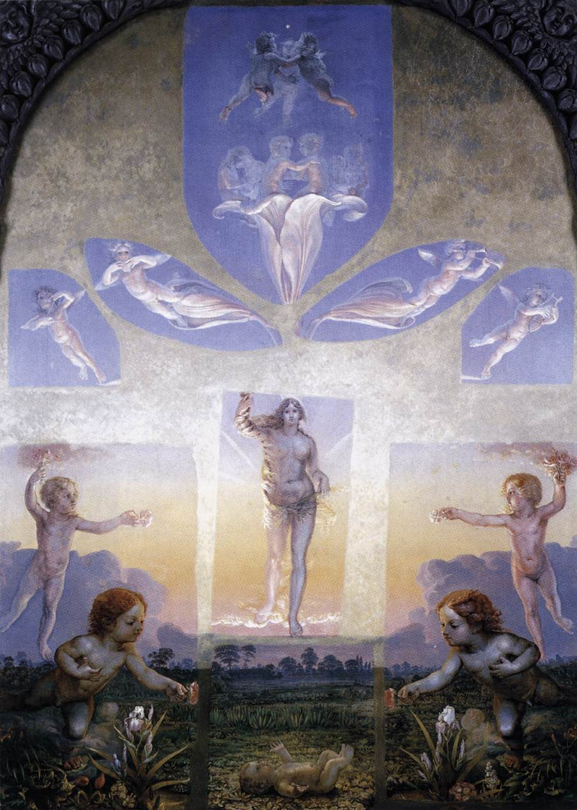

인간보다 훨씬 큰 자연·폭풍·빛이 경외와 두려움, 고독을 만드는지 본다.
상세 학습
작품에서 먼저 볼 세 가지
혁명, 전쟁, 식민·제국의 폭력이 고대의 모범이 아니라 동시대의 감정으로 그려지는지 본다.
대각선, 연기, 빠른 붓질, 서로 부딪치는 색이 관람자를 사건 속으로 끌어들이는지 본다.
국가명은 작가 분류가 아니라, 각기 다른 정치·경제·후원 조건이 낭만주의를 바꾼 배경으로 읽는다.
흔한 오해: 낭만주의는 사랑이나 아름다운 풍경의 동의어가 아니다. 고야의 전쟁, 제리코의 난파, 들라크루아의 혁명, 터너의 산업화된 바다도 이 흐름의 핵심이다.
1. 정의 — 왜 신고전주의에 새 주장을 했을까
신고전주의는 선명한 윤곽, 고대의 모범, 시민의 의무를 통해 공적 판단을 설득했다. 그러나 혁명과 제정, 전쟁, 산업화가 바꾼 세계는 질서와 보편 규칙만으로 경험되지 않았다. 낭만주의는 개인의 감정과 상상력, 특수한 역사와 장소, 통제할 수 없는 자연을 미술의 중심으로 옮겼다. 이는 고전주의를 단순히 거부한 것이 아니라, 그 질서가 비켜 가는 공포·희망·기억을 보이려는 새로운 주장이다.
기존 후원과 기호
국가, 아카데미, 궁정, 공적 살롱은 역사화의 명료한 이야기와 이상적 인체를 선호했다. 교육과 도덕, 국가적 위계를 한눈에 전달하는 이미지가 중요했다.
새로운 후원과 관객
확대된 전시 관객, 신문·판화 시장, 도시 중산층, 출판업자, 여행자, 민족주의적 공공 문화는 동시대 사건과 개인적 자연 경험, 민족의 과거를 소비하고 토론할 이미지를 원했다.
낭만주의의 후원자는 하나가 아니다. 프랑스의 살롱과 혁명 후 공적 전시, 영국의 왕립 아카데미·산업 경제·여행 시장, 독일의 분열된 여러 공국과 지식인 문화, 스페인의 전쟁·검열·궁정 변화는 각기 다른 낭만주의를 만들었다.
2. 태동 — 정렬된 권력에서 난파의 현재로
혁명과 제정의 경험은 신고전주의의 공적 형식을 더 강하게 만들기도 했지만, 그 질서가 실제 폭력과 고통을 충분히 담는지 묻게도 했다. 낭만주의 초기의 역사화는 이상화된 영웅 대신 위기에 놓인 살아 있는 몸과 불안정한 감정을 전면에 놓았다.
프랑스 혁명
왕정·교회·귀족 후원 질서가 흔들리고, 시민·국가·희생을 어떤 이미지로 기념할지가 공적 논쟁이 되었다. 낭만주의는 이 혁명의 약속과 폭력 양쪽을 감정의 문제로 다루게 된다.
나폴레옹 전쟁
유럽 전역의 점령·저항·망명은 보편 제국의 언어보다 민족의 기억, 폐허, 상실과 고향을 중요하게 만들었다. 독일권의 자연·내면 이미지와 스페인의 전쟁 증언은 이 경험과 맞닿아 있다.
메두사호 난파
식민 행정의 무능과 생존자 방치가 알려지며 정치적 스캔들이 되었다. 제리코는 실제 증언과 시신 연구를 바탕으로 그려, 동시대 재난도 역사화의 중심이 될 수 있음을 보였다.
01 · 태동
국가가 정렬한 역사와 생존자가 마주한 역사
왼쪽은 제국의 의례를 질서와 위계로 조직한다. 오른쪽은 실제 난파의 희생자를 대형 역사화의 주제로 삼아, 무엇을 역사로 기념해야 하는지 바꾼다.

직전 질서 · 신고전주의
자크루이 다비드, 《나폴레옹의 대관식》
건축과 인물의 배열은 제국 의례를 필연적이고 안정된 역사처럼 보이게 한다. 시민 윤리의 언어가 국가 권력의 장엄한 이미지로도 쓰일 수 있음을 보여 준다.
대비해 볼 것: 통제된 위계, 의례, 국가가 선택한 중심.

초기 낭만주의 · 새로운 역사화
테오도르 제리코, 《메두사호의 뗏목》
프랑스 식민 행정의 실패와 난파 생존자의 증언을 바탕으로 한 화면에서, 몸들은 피라미드처럼 치솟지만 승리 대신 절망과 희망 사이에 놓인다.
대비해 볼 것: 불안정한 대각선, 실제 재난, 익명의 고통과 생존.
3. 확립 — 자연·혁명·산업이 서로 다른 낭만주의를 만들다
낭만주의는 한 국가의 양식이 아니었다. 독일권에서는 나폴레옹 전쟁 이후의 분열과 민족·종교·철학의 관심이 고독한 자연과 내면을 밀어 올렸다. 영국에서는 산업혁명, 해군·무역 경제, 왕립 아카데미 전시와 여행 시장이 폭풍·빛·증기의 숭고를 만들었다. 프랑스에서는 혁명과 복고, 1830년 7월 혁명, 대형 살롱이 군중과 정치적 감정을 공적 이미지로 만들었다. 스페인에서는 반도 전쟁, 검열과 왕정 복귀의 폭력이 고야의 어두운 증언을 낳았다.
빈 회의와 복고
나폴레옹 몰락 뒤 유럽 군주국은 국경과 왕조를 다시 정비해 혁명 이전의 안정을 되찾으려 했다. 그러나 국가와 개인의 자유에 대한 기대는 사라지지 않았고, 낭만주의의 민족·종교·폐허 이미지는 그 긴장을 품었다.
7월 혁명
파리의 봉기는 부르봉 왕정을 무너뜨리고 입헌 군주제로 이어졌다. 들라크루아의 《민중을 이끄는 자유의 여신》은 실제 사건을 알레고리와 군중의 감정으로 바꾸어, 살롱 회화가 정치적 현재를 다룰 수 있음을 보여 준다.
산업혁명
증기기관·철도·공장과 무역의 확대는 영국의 풍경과 관람 방식을 함께 바꾸었다. 터너에게 기계와 속도는 단순한 배경이 아니라, 자연의 빛과 인간 기술이 충돌하는 새로운 숭고의 소재가 되었다.
독일권·영국: 내면과 산업의 자연
연합 국가가 아닌 여러 공국의 지식인 문화와 자연철학은 프리드리히의 침묵·폐허·안개를 가능하게 했다. 영국의 산업·해상 경제와 공개 전시 시장은 터너와 컨스터블이 실제 날씨, 증기, 빛을 대담한 회화 경험으로 바꾸게 했다.
프랑스·스페인: 혁명과 폭력의 현재
프랑스의 살롱과 인쇄 매체는 혁명을 넓은 관객이 논쟁하는 이미지로 만들었다. 스페인의 전쟁과 정치적 억압은 고야에게 영웅 대신 희생자, 군대의 얼굴 없는 폭력, 공포의 내면을 그리게 했다.
02 · 확립
고독한 관람자에서 혁명의 군중으로
프리드리히는 자연을 내면의 한계가 드러나는 공간으로, 들라크루아는 혁명을 색과 군중의 운동으로 그린다. 서로 다른 환경이지만 둘 다 개인을 넘는 힘 앞의 인간을 다룬다.

확립 1 · 독일 낭만주의의 숭고
카스파 다비드 프리드리히, 《안개 바다 위의 방랑자》
등을 보인 인물은 관람자의 자리를 대신하고, 안개와 산은 측정할 수 없는 정신적 공간이 된다. 자연은 배경이 아니라 인식의 한계를 체험하게 하는 주체다.
확립의 방식: 작은 인간과 광대한 자연, 고독과 경외를 결합한다.

확립 2 · 프랑스 혁명의 감정
외젠 들라크루아, 《민중을 이끄는 자유의 여신》
1830년 7월 혁명의 바리케이드에서 알레고리와 실제 군중, 연기와 시체가 뒤섞인다. 색채와 대각선은 자유를 차분한 도덕이 아니라 위험한 집단 행동으로 체험하게 한다.
확립의 방식: 동시대 사건, 군중, 격렬한 색과 운동을 공적 역사화로 만든다.
4. 비판과 전환 — 영웅적 감정에서 동시대 현실과 빛으로
낭만주의는 근대의 공포와 자유를 강하게 드러냈지만, 그 격렬함과 이국적 상상, 영웅적 개인은 때로 현실의 계급·노동·제도 문제를 장면의 드라마로 바꾼다는 비판을 받았다. 1848년 전후의 사회적 긴장과 도시화 속에서 사실주의는 평범한 노동, 장례, 교통, 가난을 대형 회화의 주제로 삼았다. 동시에 터너와 컨스터블의 빛·날씨·빠른 관찰은 인상주의가 순간의 시각 경험을 탐구할 길을 열었다.
1848년 혁명
유럽 여러 도시에서 자유주의·민족주의·노동의 요구가 한꺼번에 폭발하면서, ‘위대한 영웅’보다 실제 시민과 계급의 삶을 그려야 한다는 요구가 커졌다. 이는 쿠르베를 비롯한 사실주의가 낭만주의의 극적 장면을 비판하는 중요한 배경이 되었다.
현실을 드라마로 만드는 위험
영웅, 재난, 이국, 폐허는 강한 감정을 만들지만 일상의 사회 구조를 상징적 장면 뒤로 밀 수 있었다.
누가 회화의 주제가 되는가
쿠르베와 동료들은 익명의 마을 사람과 노동을 역사화의 크기로 그려 낭만적 예외보다 일상의 현실을 요구했다.
무엇이 보이는가
터너의 빛과 대기는 이후 화가들이 고정된 역사 서사보다 순간의 색, 날씨, 도시의 시각 경험을 탐구하도록 자극했다.
03 · 비판과 전환
전함의 석양에서 평범한 장례와 순간의 빛으로
터너는 산업화의 전환을 빛의 장엄한 감정으로 그린다. 쿠르베는 화려한 상징을 줄이고 실제 공동체의 장례를 정면으로 제시한다. 두 방향은 인상주의와 사실주의가 낭만주의의 유산을 서로 다르게 이어받는 방식을 보여 준다.

전환의 낭만주의 · 빛과 산업
조지프 말로드 윌리엄 터너, 《전함 테메레르의 마지막 항해》
증기선에 끌려가는 낡은 전함과 석양은 산업 시대의 변화를 애도하는 동시에 장엄하게 만든다. 세부보다 색과 대기가 역사적 감정을 전달한다.
다음으로 이어지는 점: 형태를 녹이는 빛과 색의 관찰은 인상주의의 즉각적 시각 경험을 예고한다.

새 사조 · 사실주의의 대안
귀스타브 쿠르베, 《오르낭의 매장》
영웅이나 알레고리 대신 실제 마을 사람들을 역사화의 크기로 제시한다. 낭만적 극적 순간보다 동시대 공동체의 무게와 불편한 현실이 화면의 중심이 된다.
새로운 주장: 평범한 사람과 사회 현실도 대형 회화의 중요한 주제가 된다.
5. 대표 미술가 — 초심자 핵심과 중급 확장
작가를 국가별로 묶지 않고 학습 단계와 고유한 조형 문제로 배열했다. 주요 활동 국가는 각 변주를 낳은 후원·정치·경제 환경을 읽기 위한 정보다.
| 학습 단계 | 미술가·분야 | 주요 활동 국가 | 미술가 고유의 특징 | 대표 작품 · 연도 |
|---|---|---|---|---|
| 초심자 핵심 | 카스파 다비드 프리드리히 · 풍경화 | 독일권 | 등을 보인 인물과 광대한 자연으로 관람자의 내면을 화면에 참여시킨다. | 《안개 바다 위의 방랑자》 · 1818 |
| 초심자 핵심 | 조지프 말로드 윌리엄 터너 · 풍경·해양화 | 영국 | 빛·대기·폭풍·증기를 형태보다 앞세워 산업 시대의 숭고를 만든다. | 《전함 테메레르의 마지막 항해》 · 1839 |
| 초심자 핵심 | 외젠 들라크루아 · 역사화 | 프랑스 | 대각선, 색채, 군중으로 혁명과 자유를 체험적 사건으로 바꾼다. | 《민중을 이끄는 자유의 여신》 · 1830 |
| 초심자 핵심 | 프란시스코 고야 · 역사화·판화 | 스페인 | 영웅 서사 대신 전쟁의 희생자와 얼굴 없는 폭력을 직접 보이게 한다. | 《1808년 5월 3일》 · 1814 |
| 중급 확장 | 필리프 오토 룽게 · 상징 회화 | 독일권 | 빛·식물·아이를 우주의 순환과 인간 생애를 잇는 상징 체계로 만들었다. | 《아침》 · 1808 |
| 중급 확장 | 존 컨스터블 · 풍경화 | 영국 | 실제 농촌의 날씨·구름·습기를 야외 습작의 빠른 관찰로 옮겼다. | 《건초 마차》 · 1821 |
| 중급 확장 | 윌리엄 블레이크 · 시·판화·채색 | 영국 | 개인 신화와 독자적 양각 인쇄로 이성과 제도의 한계를 환시적으로 비판했다. | 《태고의 존재》 · 1794 |
| 중급 확장 | 테오도르 제리코 · 역사화 | 프랑스 | 실제 재난을 연구해 영웅 대신 절망과 생존이 충돌하는 집단을 그렸다. | 《메두사호의 뗏목》 · 1818–1819 |
6. 명확하게 확인되는 화파와 계보
낭만주의 전체를 국가별 화파로 환원하지 않는다. 다만 실제 전시·교육·동료 관계가 확인되는 집단은 별도로 볼 수 있다.
| 화파·집단 | 중심 인물 | 공통점 | 미술사적 의미 |
|---|---|---|---|
| 바르비종 화파 | 테오도르 루소, 장프랑수아 밀레 등 | 퐁텐블로 숲 주변에서 자연을 직접 관찰하고 야외 습작을 중시했다. | 낭만주의 풍경의 정서와 관찰을 사실주의·인상주의의 현장성으로 잇는 실제 집단이다. |
| 프랑스 낭만주의 살롱·아틀리에 네트워크 | 들라크루아, 제리코와 동시대 작가들 | 살롱을 통해 역사·이국·혁명·색채를 둘러싼 논쟁을 공적 관객에게 제시했다. | 고정된 단일 화파라기보다, 아카데미 고전주의와 경쟁하며 낭만주의를 공론장에 정착시킨 관계망이다. |
7. 대표작 카드
대표 미술가 표와 같은 순서의 작품이다. 자연·빛·혁명·폭력·상징이 서로 다른 낭만주의의 공통 문제를 어떻게 풀었는지 비교한다.
초심자 핵심
초심자 핵심 · 풍경
카스파 다비드 프리드리히, 《안개 바다 위의 방랑자》
선정 이유: 관람자를 자연과 자기 내면의 불확실성 앞에 세운다.
안개로 가려진 산과 등을 보인 인물이 자연을 정신적 공간으로 바꾼다.
초심자 핵심 · 풍경·해양
터너, 《전함 테메레르의 마지막 항해》
선정 이유: 산업화의 시간을 빛과 대기의 감정으로 바꾼다.
석양과 증기선이 한 시대의 끝을 색채의 장관으로 만든다.
초심자 핵심 · 역사화
외젠 들라크루아, 《민중을 이끄는 자유의 여신》
선정 이유: 혁명과 군중을 색채의 드라마로 바꾼 기준점이다.
연기·시체·삼색기와 대각선이 사건의 격렬한 감정을 만든다.

초심자 핵심 · 역사화
프란시스코 고야, 《1808년 5월 3일》
선정 이유: 전쟁을 영웅 서사가 아닌 희생자의 공포로 바꾼다.
얼굴 없는 총살대와 빛 아래의 희생자가 근대 폭력의 비인간성을 드러낸다.
중급 확장


중급 확장 · 풍경
존 컨스터블, 《건초 마차》
선정 이유: 실제 날씨와 농촌을 관찰한 영국 낭만주의의 다른 축이다.
구름과 습기, 일상적 농촌이 살아 있는 자연의 리듬을 만든다.

중급 확장 · 시·판화
윌리엄 블레이크, 《태고의 존재》
선정 이유: 개인 신화와 환시가 이성과 제도의 한계를 비판하는 축을 보여 준다.
불타는 원 안에서 우주를 재는 형상이 숭고와 상상력을 압축한다.
중급 확장 · 역사화
테오도르 제리코, 《메두사호의 뗏목》
선정 이유: 재난의 실제 증언을 거대한 역사화로 바꾼 출발점이다.
치솟는 몸과 폭풍우가 절망과 희망이 충돌하는 집단 감정을 만든다.